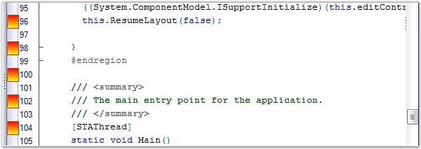

This event occurs when a custom line mark should be drawn.
The event handler receives an argument of type DrawLineMarkEventArgs. The following DrawLineMarkEventArgs members provide information specific to this event.
|
Member |
Description |
|
CustomDraw |
If set to True, user handles drawing of the bookmark. |
|
Graphics |
Graphics object. |
|
MarkRect |
Rectangle where line mark should be drawn. |
|
PhysicalLine |
Virtual line number. |
|
VirtualLine |
Physical line number. |
|
[C#]
private void editControl1_DrawLineMark(object sender, Syncfusion.Windows.Forms.Edit.DrawLineMarkEventArgs e) { if( e.VirtualLine % 2 == 0 ) { Brush brush = new LinearGradientBrush(e.MarkRect, Color.Red, Color.Yellow, LinearGradientMode.Vertical); e.Graphics.FillRectangle(brush, e.MarkRect); e.Graphics.DrawRectangle(Pens.IndianRed, e.MarkRect); } } |
|
[VB.NET]
Private Sub editControl1_DrawLineMark(ByVal sender As Object, ByVal e As Syncfusion.Windows.Forms.Edit.DrawLineMarkEventArgs) If e.VirtualLine Mod 2 = 0 Then Dim brush As Brush = New Drawing2D.LinearGradientBrush(e.MarkRect, Color.Red, Color.Yellow, LinearGradientMode.Vertical) e.Graphics.FillRectangle(brush, e.MarkRect) e.Graphics.DrawRectangle(Pens.IndianRed, e.MarkRect) End If End Sub |

Figure 82: Custom Indicators in the Indicator Margin